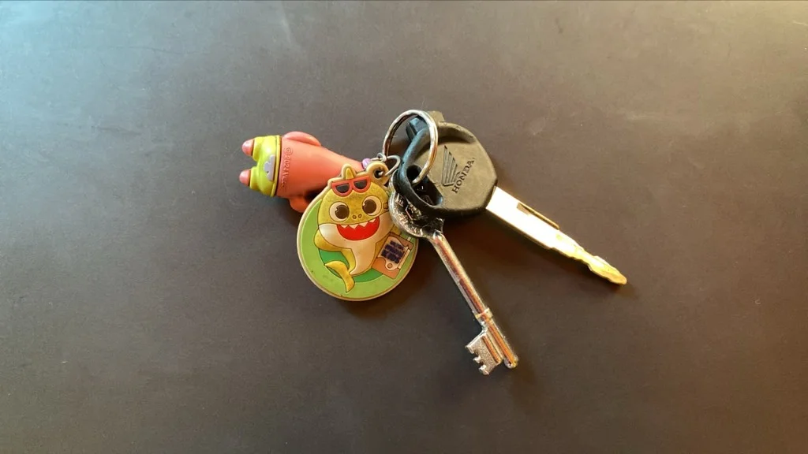
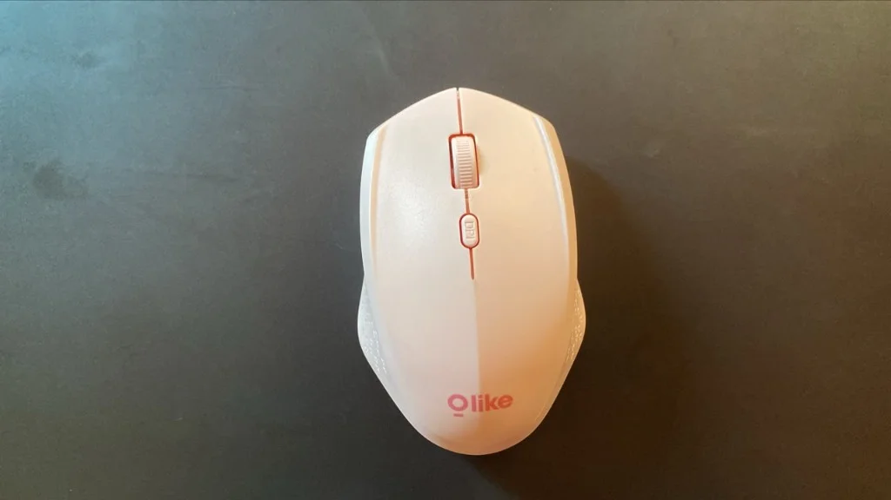
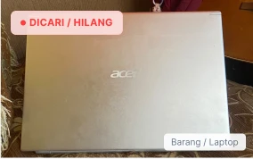
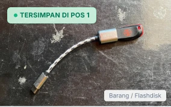
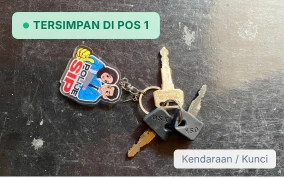
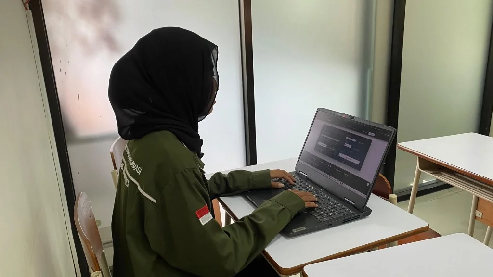

Daftar Barang Hilang Sedang Dicari
Berikut daftar barang milik mahasiswa atau civitas akademika yang dilaporkan hilang dan dalam proses penelusuran posko.

Dompet Kulit Dunhill
Dompet lipat kulit tekstur warna coklat tan merk Dunhill berisi KTM dan kartu penting.
Lihat Detail Laporan
Kunci Motor Honda
Kunci kontak motor Honda hitam beserta 2 gantungan karakter (Patrick Star & Baby Shark).
Lihat Detail Laporan
Earphone Kabel Putih
Earphone in-ear kabel warna putih jack audio 3.5mm tertinggal di area laboratorium.
Lihat Detail Laporan
Mouse Olike Wireless
Mouse tanpa kabel merk Olike warna pink dengan tombol scroll oranye dan tombol DPI.
Lihat Detail Laporan
Laptop Lenovo Ideapad
Unit laptop Lenovo warna abu-abu gelap dengan stiker prodi TI tertinggal di meja ruang seminar.
Lihat Detail Laporan
Flashdisk Sandisk 32GB
Flashdisk warna hitam merah bertali gantungan biru berisi file tugas akhir perkuliahan.
Lihat Detail Laporan
Kunci Motor Honda Beat
Kunci motor dengan gantungan silikon hitam dan remote alarm, tertinggal di kantong parkir timur.
Lihat Detail Laporan
Dompet Lipat Hitam
Dompet kulit sintetis hitam berisikan KTM, SIM C, dan kartu akses parkir gedung perkuliahan.
Lihat Detail Laporan
Binder Catatan & Modul
Binder warna biru navy berisikan catatan praktikum workshop desain dan berkas proposal tim.
Lihat Detail Laporan
Jaket Jurusan Hijau Army
Jaket angkatan warna hijau army dengan emblem bendera dan bordir jurusan Teknologi Informasi.
Lihat Detail LaporanMerasa Barang Anda Telah Ditemukan Seseorang?
Cek juga daftar barang temuan yang telah diserahkan mahasiswa atau petugas ke posko keamanan. Anda dapat langsung mengklaimnya dengan menunjukkan bukti kepemilikan sah.